The episode, step by step
Sourcing Trip Diaries, Tour 1, in plain words. Each step says what happens, what you hear, what you see and what text is on screen. Anything we do not have yet carries a red tag: not recorded (a voiceover still to do), footage unconfirmed (nobody has checked the cards), or to build (a graphic). Everything untagged was captured on the trip. The Footage line under each step is the shot-log check of 15 October: confirmed, partly, or missing. Each step now carries a storyboard strip: real frames from the crew's contact sheets, with the clip number, grade and best in and out point under each. Dashed red tiles are shots we do not have. Clip numbers in small grey type are for the editor.
Open
The cold open
25 sSix people, one line each, before anyone explains anything.


Day 1 · Foshan · Scale
Leaving Guangzhou
30 sDawn. Joshua introduces the bus and the trip.
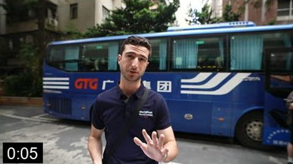


Who is on the bus
60 sFour clients introduce themselves. This is what makes a viewer want to be on the bus.


Factory 1: Viomi
80 sA water purifier maker that supplies Xiaomi and is listed in New York. The clients push back on warranty and certification.

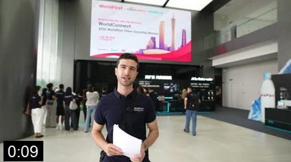


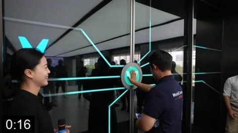


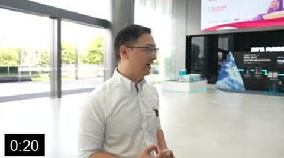
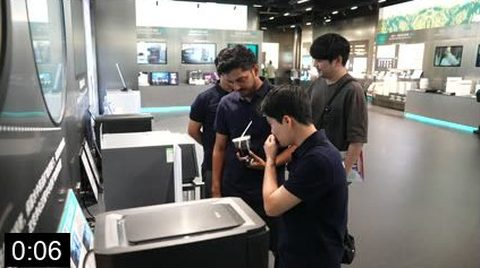

Lunch
20 sThe first unforced WorldFirst moment.
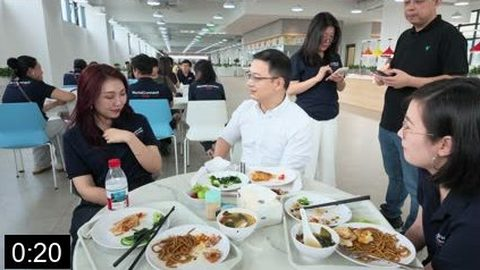
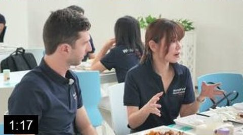

Factory 2: Stelang
35 sCoffee machines. The light moment of the day.
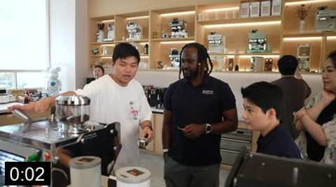
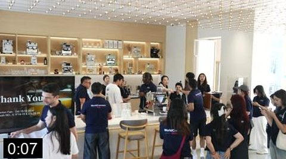
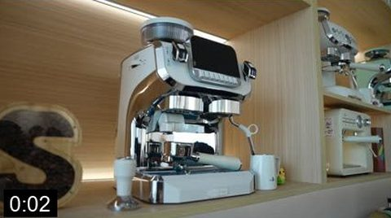
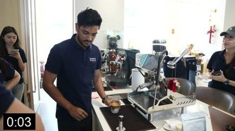
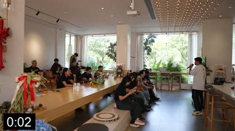
End of Day 1
25 sJoshua sums up the day. He recorded this the next morning on the bus, and it works as the Day 1 close.


Day 2 · Zhongshan · Face to face
On the bus
45 sThe next factory is set up, and a Korean client tells us he already pays Chinese factories through WorldFirst.
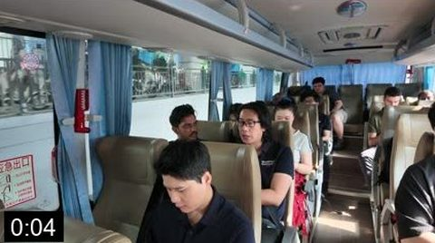

Factory 3: Rongde
2 min 30 sThe heart of the film. A 16-floor factory that does everything under one roof, a lab that tests products for a year, and the best interview of the trip.

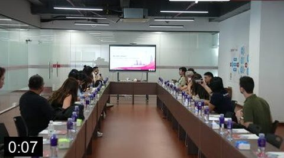


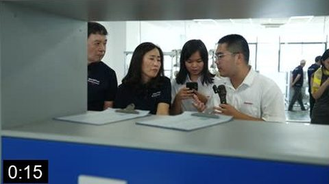


Factory 4: Weijin
1 min 20 sOvens and air fryers. Scale, then the payment answer.

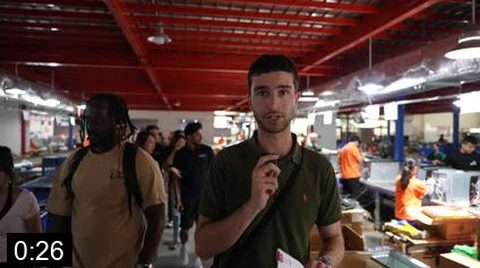


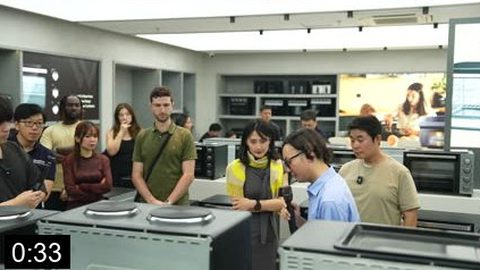
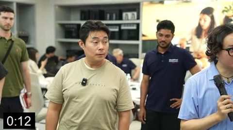


Factory 5: Vision
20 sBaby bottle warmers. Short, because there is no interview.
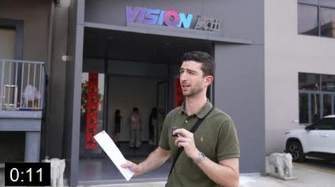
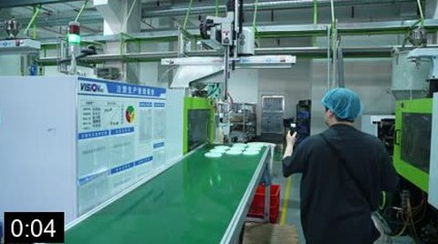
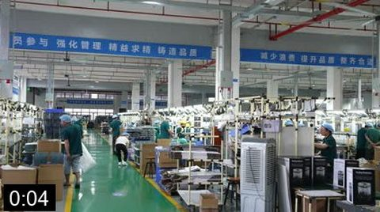
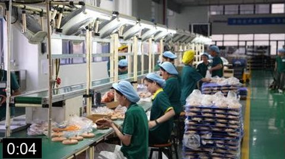
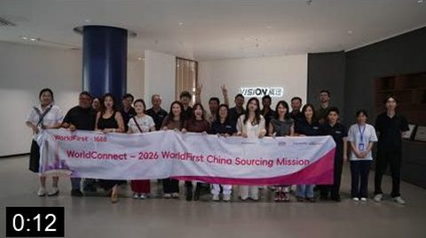
End of Day 2
25 sDoris briefs tomorrow; Joshua closes the day.

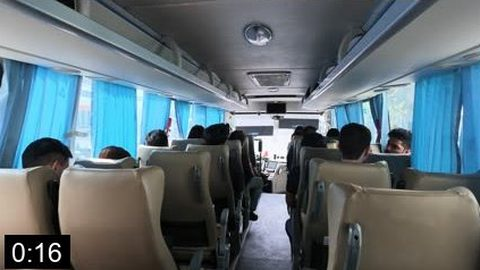
Day 3 · Guangzhou · One ecosystem
The morning
35 sDim sum, the 1688 cosmetics centre, the Alibaba Center.
The stage
70 sSix people sit down with Joshua after the workshop. Two or three lines each.


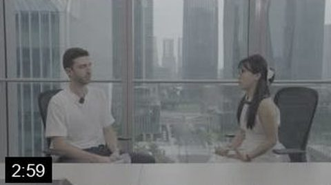


The close
25 sJoshua's recorded voice over the Canton Party, or over the stage if there is no party footage. Then the end card.